misc
- login
- disk
- bridge
login
文件中有一段伪加密的，zipcenop来解伪加密。
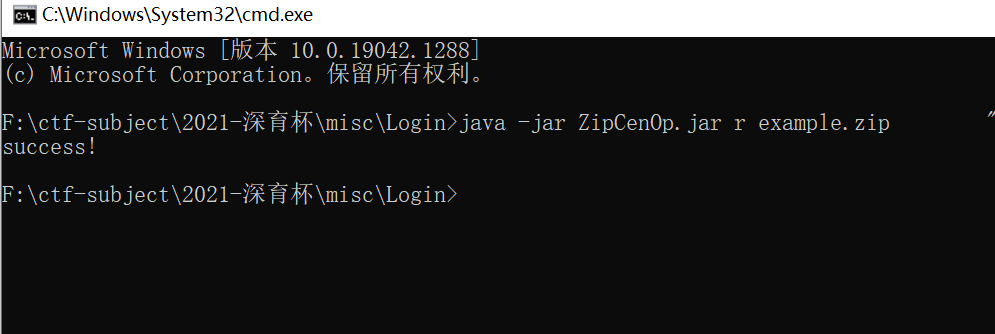
伪加密解压出一个文件和源文件来做明文攻击。
crc32值相同。且是从zip文件内解出的一个，在加密，与原来的zip文件做明文攻击，
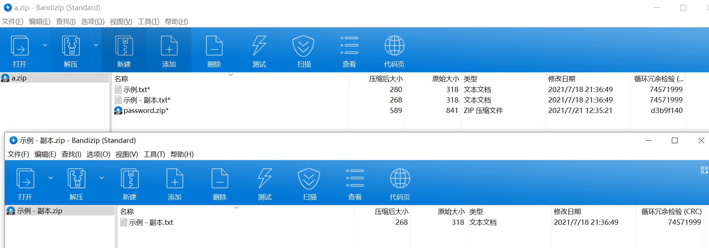
解出来密码是qwe@123
每个文件只有6个字节，尝试用crc32爆破
1 | 1 21137233 |
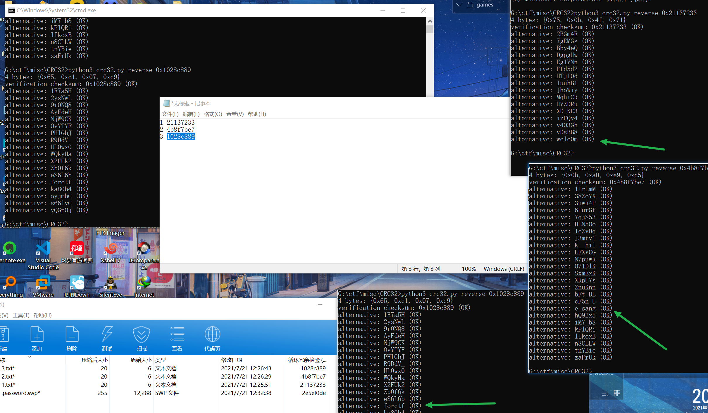
最后就是用vim -r来恢复文件
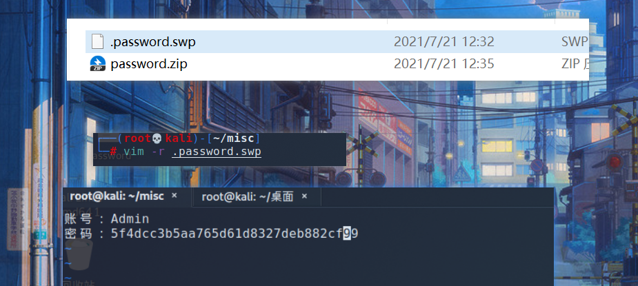
还有种是用bkcarck解出三个key。在用pkcrack解，未尝试
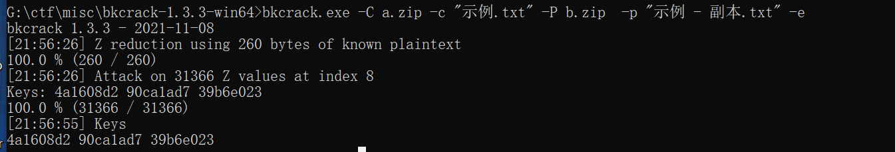
disk
解压出一个奇怪的文件，根据后缀分析可能会是veracrypt加密的文件。文件名其实就是键盘密码，描出来就是pvd。zse456tfdyhnjimko0-=[;.,.vera
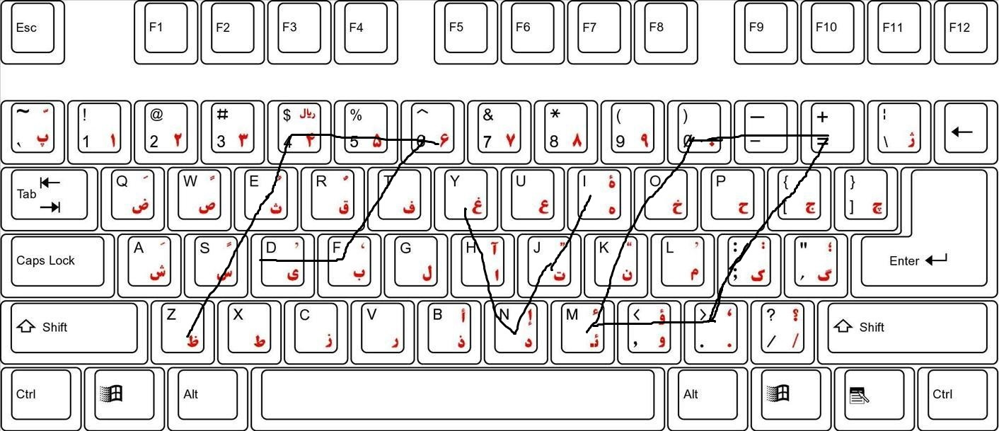
在加载的驱动器中在拷出东西
一个没用的txt和一个没有后缀的文件
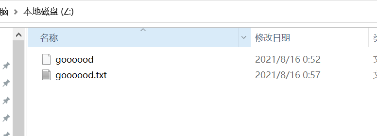
010可以看到是7z的文件，解压出来是dos的一个分区表，可以看成是windows的一个分区，磁盘。再用7z打开分出两个img
这步可以不分开，也可以根据官方wp中是直接改名vmd来解。后续都一样的
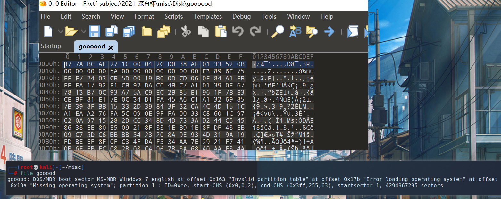
img文件是bitlocker加密的。
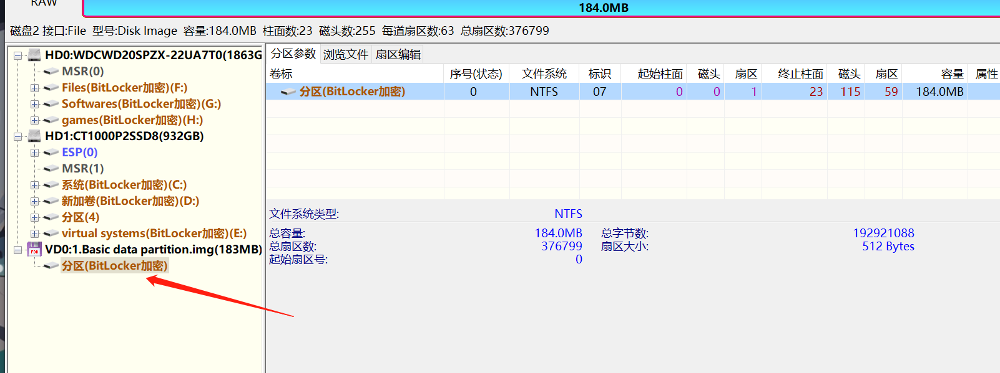
1 | bitlocker2john -i 1.Basic\ data\ partition.img |
这边用虚拟机的linux下的hashcat是有问题。新版的hashcat会检测是不是虚拟机运行。
就用windows下的hashcat，把linux下的hash.txt和字典下载下来。解出密码是abcd1234
1 | cd /usr/share/wordlist |
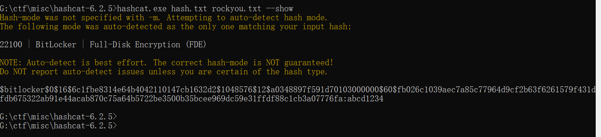
用diskgenius解开来。在回收站里发现了hint和一个很大的文件
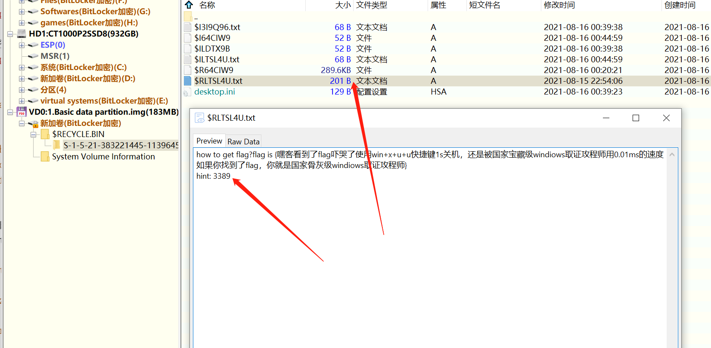
可以看到还是一个7z的文件，解出来直接用bmc来。根据提示来吧，file和fvp都出不来是什么文件
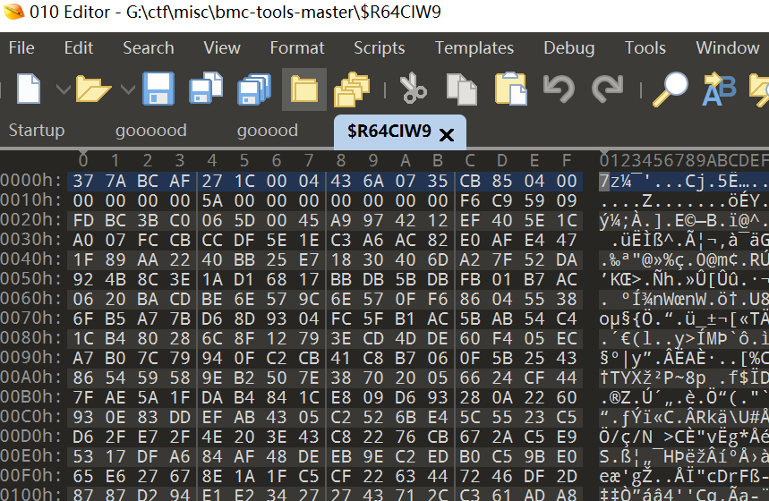
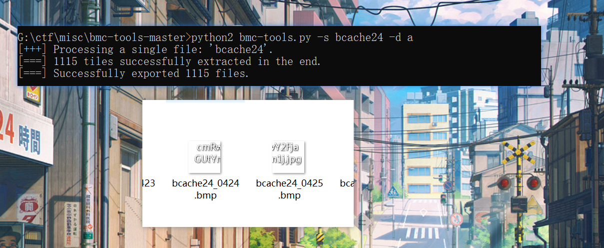
在把两张图拼起来
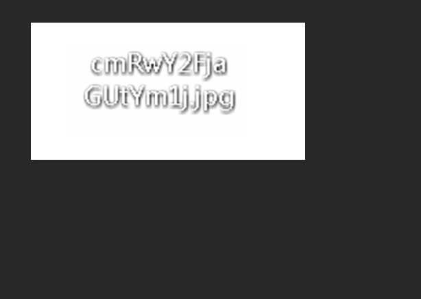
还有一种用bmc-viewer-backup解的
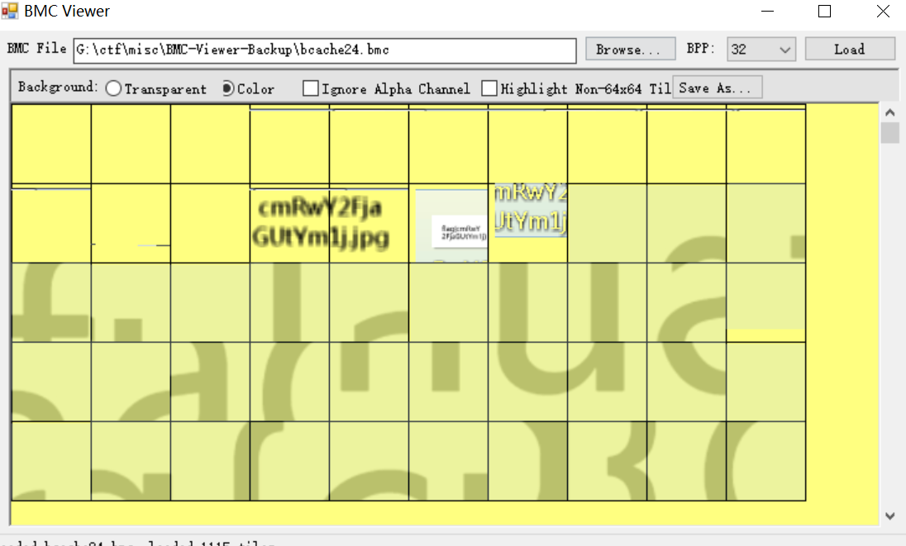
base64解出flag为rdpcache-bmc，套上flag格式
bridge
exif文件看到copyright有一串，给他解密掉得到一串字符串
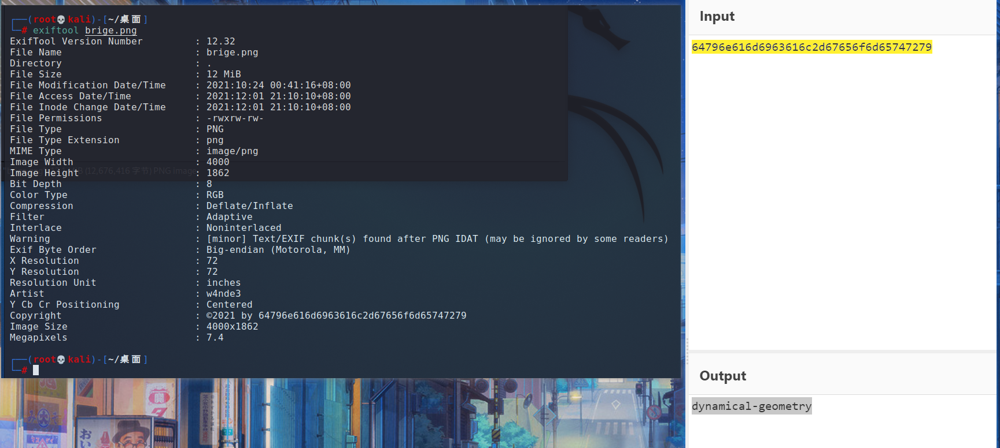
原图lsb，bgr通道最低位可以看到有一张png
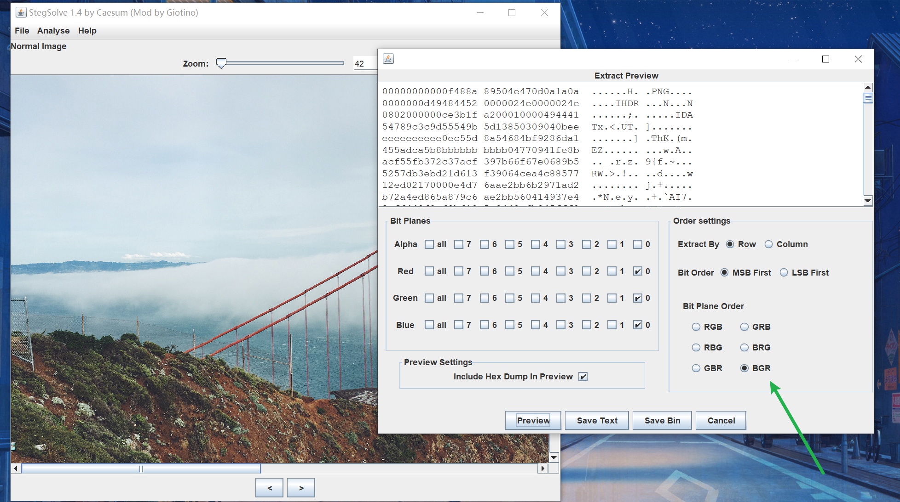
遍历像素点的时候发现，每一位的b有信息，遂提出，存为一个zip，用之前exif的密码解出一个stl的文件
1 | from PIL import Image |
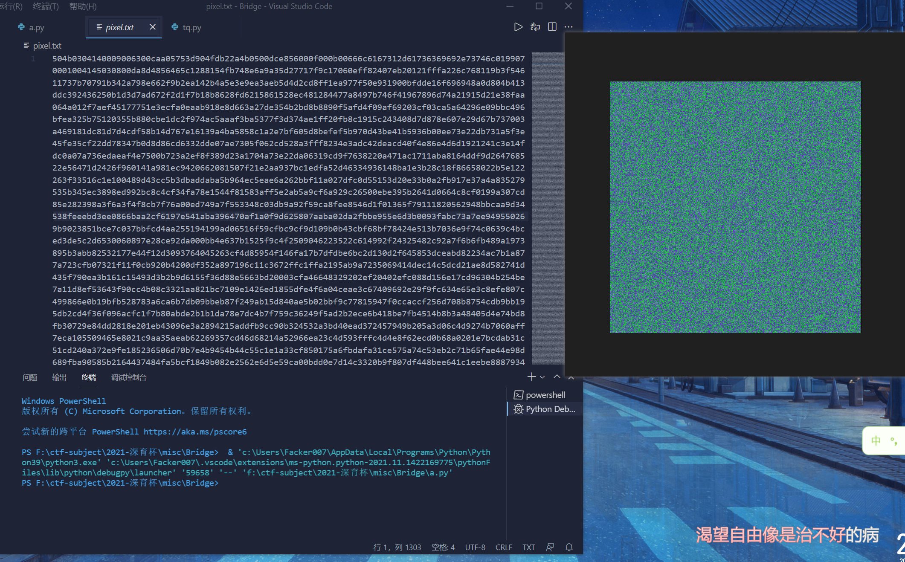
再回过头来看原图的结构，idat块倒数第二块没填满就进入了下一块，判断最后一块是添加进去的
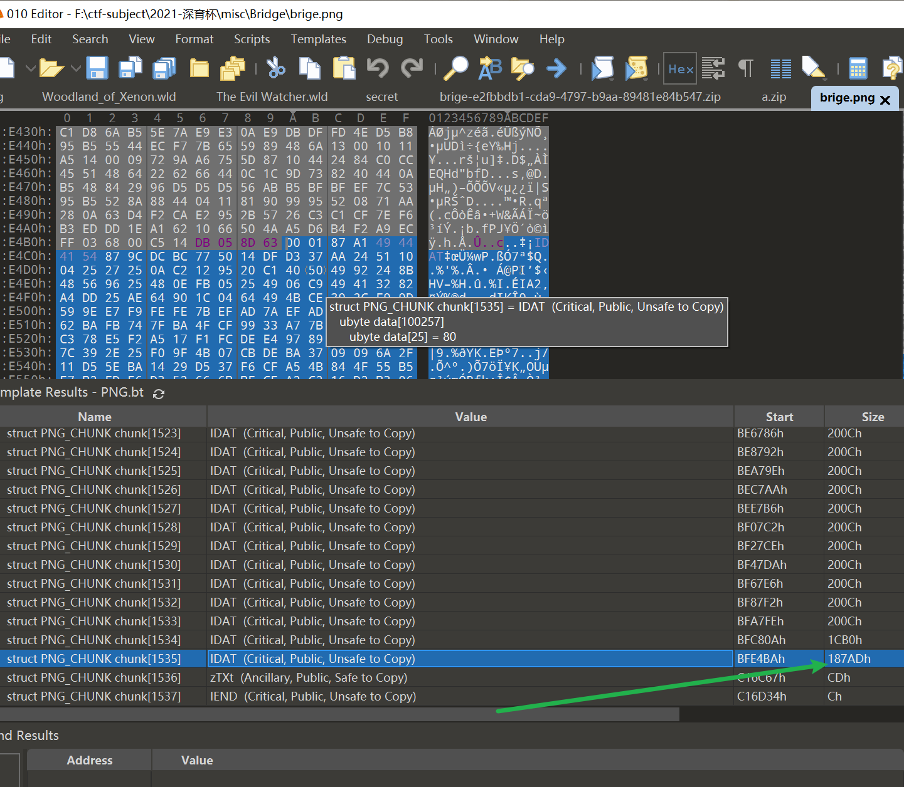
提出最后一个idat块，从指向的位置开始提，去掉前面的idat块标识，最后的png文件结尾不要提取，最后在存起来。脚本给他解出来，zlib解密
1 | import zlib |
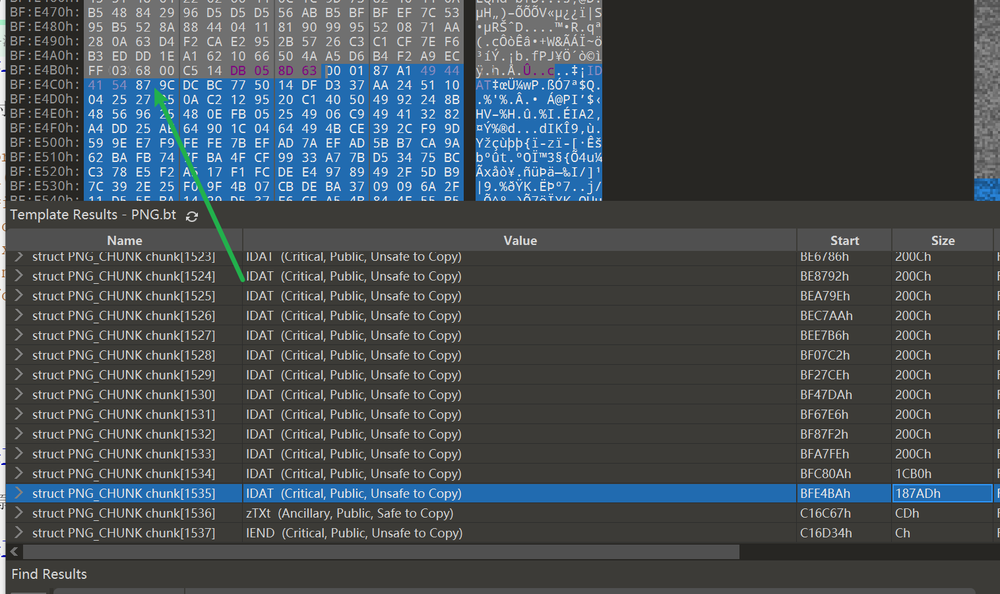
得到一个rar文件（flag2）”如果你不知道这是什么东西，可以去看看flag1!”，提示看解出一个没有后缀的文件。判断也是stl文件。解两个stl文件
3d文件，打开两个文件
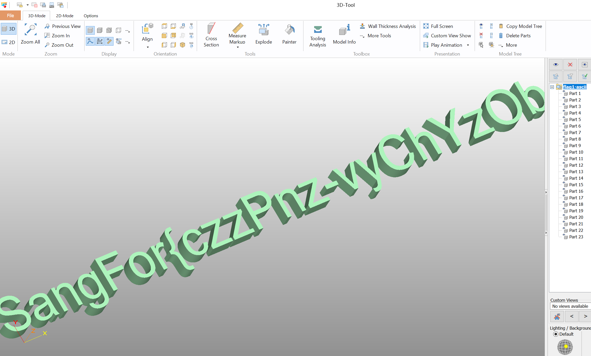
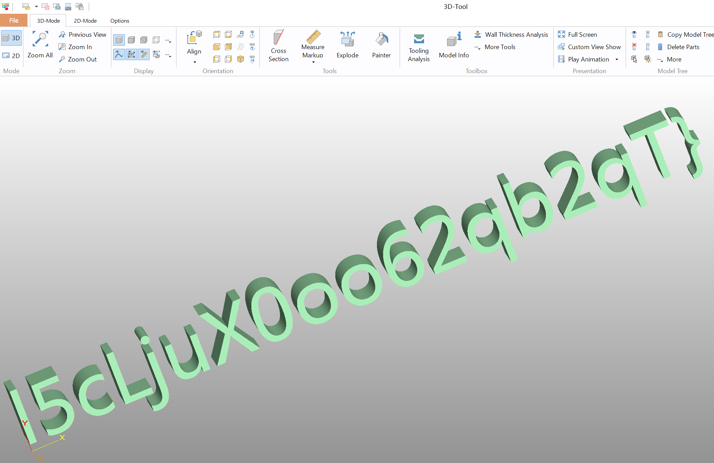
拼起来得到flag
1 | czzPnz-vyChYzObI5cLjuX0oo62qb2qT |